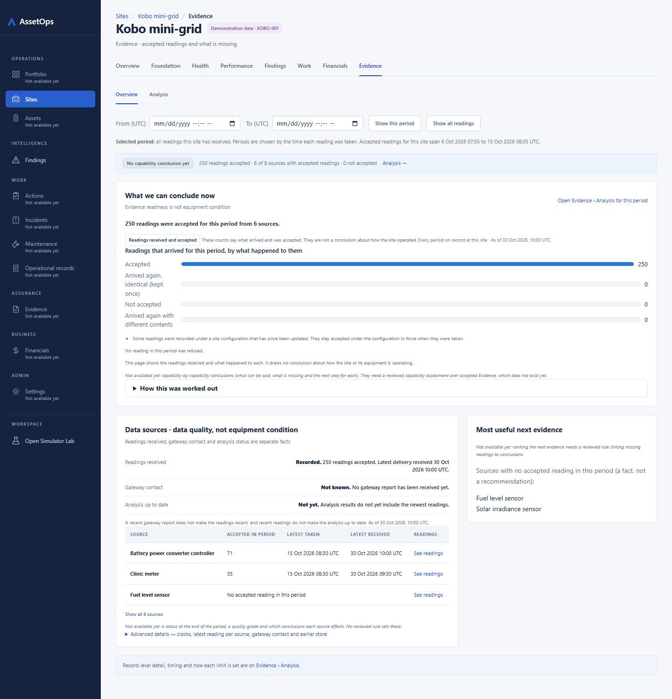

App: What we can conclude now | Data sources · data quality, not equipment condition | Most useful next evidence Mock: What we can conclude now | Data sources · data quality, not equipment condition | Most useful next evidence
App http://localhost:6306/sites/KOBO-001/evidence

Mock #/evidence
evidence (stocked) · 390x900
App: What we can conclude now | Data sources · data quality, not equipment condition | Most useful next evidence Mock: What we can conclude now | Data sources · data quality, not equipment condition | Most useful next evidence
App: What we can conclude now | Data sources · data quality, not equipment condition | Most useful next evidence Mock: What we can conclude now | Data sources · data quality, not equipment condition | Most useful next evidence
App: What we can conclude now | Data sources · data quality, not equipment condition | Most useful next evidence Mock: What we can conclude now | Data sources · data quality, not equipment condition | Most useful next evidence